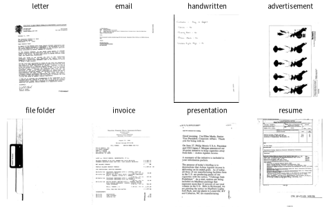

Harley et al. (2015). 스캔한 업무 문서 흑백 사진 16종류 (편지 · 양식 · 이메일 · 손글씨 · 광고 · 보고서 · 논문 · 사양서 · 파일 폴더 · 뉴스 · 예산 · 송장 · 발표 자료 · 설문 · 이력서 · 메모). 원본 40만 장 중 종류마다 75장씩 고른 판 (Hugging Face jordyvl/rvl_cdip_100_examples_per_class, 학습 800 · 시험 400)

| label | width | height | ink |
|---|---|---|---|
| scientific report | 757 | 1000 | 0.142 |
| budget | 754 | 1000 | 0.038 |
| scientific publication | 772 | 1000 | 0.021 |
| letter | 780 | 1000 | 0.024 |
| news article | 754 | 1000 | 0.048 |
| file folder | 783 | 1000 | 0.403 |
| 열 | 종류 | 빈칸 | 고유값 수 | 범위 · 대표값 |
|---|---|---|---|---|
| label | 글자 · 범주 | 0 | 16 | 가장 흔한 값: letter (6.2%) |
| width | 숫자 | 0 | 79 | 625 ~ 902 (평균 766.2) |
| height | 숫자 | 0 | 1 | 1000 ~ 1000 (평균 1000) |
| ink | 숫자 | 0 | 213 | 0.001 ~ 0.859 (평균 0.0814) |
광고 · 발표 자료는 진하고, 편지 · 이메일은 연하다: 모양만으로도 단서가 된다
| ① 한 행 | 문서 사진 한 장 |
| ② 입력 X | 줄인 흑백 사진 (48×64) + 줄 · 칸마다 잉크 양 |
| ③ 출력 y | 16가지 문서 종류 |
| ④ 평가지표 | 정확도 + 종류별 재현율 |
| ⑤ 기준선 | 가장 흔한 종류 (모두 같은 수라 1/16) |
문제를 정할 때 처음 채워 보는 칸들입니다. 여기서 끝이 아니라, 시험 데이터를 어떻게 나눌지 · 틀렸을 때 손해가 얼마인지 · 예측 시점에 정말 알 수 있는 값인지 같은 칸을 더 붙일수록 좋은 문제가 됩니다.
baseline (one class): accuracy 6.2% random forest on page layout: accuracy 42.2%
누가, 왜, 어떻게 만든 데이터인지 직접 확인해 보세요.
프로젝트 주제를 고를 때 참고하세요 (일반적인 예시).